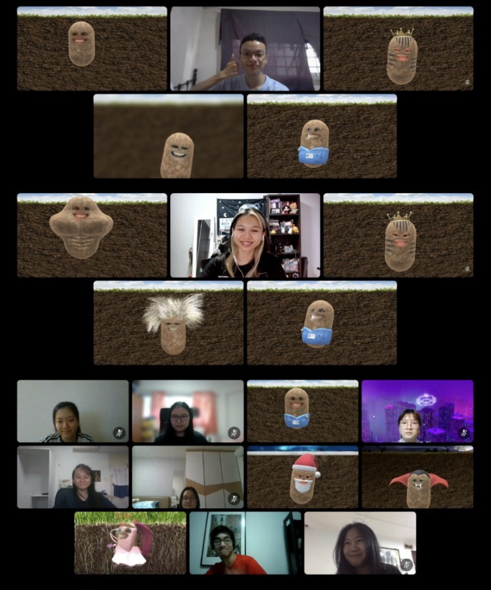

Courses under School of Computing
| Applied AI & Science | Common ICT Programme | Infocomm Security Management | Information Technology |
|---|---|---|---|
|
Course Highlights -BE PART OF THE REVOLUTION-EMPOWER YOUR FUTURE -NEVER BE BORED -INDUSTRY NOW CURRICULUM (INC) -STATE OF THE ART AI FACILITIES |
Course Highlights The programme offers:fundamental IT modules to give you an insight into what interests you. common foundational modules and comprehensive exposure to various areas of IT through the Infocomm Professional Seminars. curriculum which includes IT career guidance to prepares graduates for upcoming trend in IT sectors industry |
Why choose DISM @SP? The threat has never been so real. The morewe rely on the Internet to store and manage important information, the more we need to keep it safe from cybercriminals. Be a part of the elite force in keeping the Cyber World SAFE! Being a Diploma in Infocomm Security Management (DISM) student gives you the competitive edge for a boost in your future studies and career. You can look forward to an interesting curriculum that covers offensive attacks, defensive methods and investigative skills. |
Course Highlights INDUSTRY NOW CURRICULUM (INC)Industry Project Learning Approach INDUSTRY CERTIFIED CURRICULUM (IC2) AWESOME OPPORTUNITIES GET A HEAD START FOR LOCAL UNIVERSITIES IMMERSIVE EXPERIENCE TECHNOLOGY CENTRE (IXTC) |
Freshise Experience
FOC Experience
Freshmen orientation camp was held via online. Even tho I prefer physical
orientation,
this was quite fun and I made some friends who are in the same course with me. One
who
was in the same group with me in that camp is now in the same class with me. The
camp
leaders (seniors) are really friendly and shared their experiences willingly.

DIT Student's Life
Compared to the other school at SP, the students from SOC has the tiring schedule.
For
me, I need to be at the school starting from 8 am to 6 pm in general. I have zero
background knowledge in IT before but because of the teaching method and care from
the
lecturers, I don’t have much difficulty.